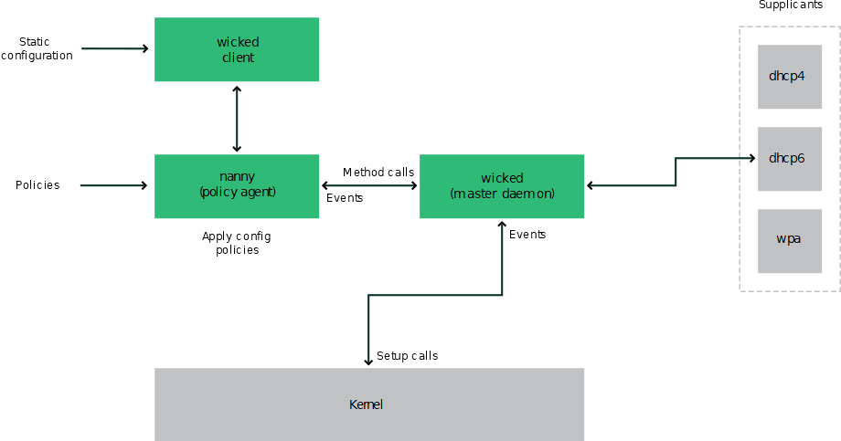

23.6. Configuring a network connection manually
Manual configuration of the network software should be the last alternative. Using YaST is recommended. However, this background information about the network configuration can also assist your work with YaST.
23.6.1. The wicked network configuration
The tool and library called wicked provides a new framework for network configuration.
One of the challenges with traditional network interface management is that different layers of network management get jumbled together into one single script, or at most two different scripts. These scripts interact with each other in a way that is not well defined. This leads to unpredictable issues, obscure constraints and conventions, etc. Several layers of special hacks for a variety of different scenarios increase the maintenance burden. Address configuration protocols are being used that are implemented via daemons like dhcpcd, which interact rather poorly with the rest of the infrastructure. Funky interface naming schemes that require heavy udev support are introduced to achieve persistent identification of interfaces.
The idea of wicked is to decompose the problem in several ways. None of them is entirely novel, but trying to put ideas from different projects together is hopefully going to create a better solution overall.
One approach is to use a client/server model. This allows wicked to define standardized facilities for things like address configuration that are well integrated with the overall framework. For example, using a specific address configuration, the administrator may request that an interface should be configured via DHCP or IPv4 zeroconf. In this case, the address configuration service simply obtains the lease from its server and passes it on to the wicked server process that installs the requested addresses and routes.
The other approach to decomposing the problem is to enforce the layering aspect. For any type of network interface, it is possible to define a dbus service that configures the network interface's device layer—a VLAN, a bridge, a bonding, or a paravirtualized device. Common functionality, such as address configuration, is implemented by joint services that are layered on top of these device specific services without having to implement them specifically.
The wicked framework implements these two aspects by using a variety of dbus services, which get attached to a network interface depending on its type. Here is a rough overview of the current object hierarchy in wicked.
Each network interface is represented via a child object of /org/opensuse/Network/Interfaces. The name of the child object is given by its ifindex. For example, the loopback
interface, which usually gets ifindex 1, is /org/opensuse/Network/Interfaces/1, the first Ethernet interface registered is /org/opensuse/Network/Interfaces/2.
Each network interface has a class
associated with it, which is used to select the dbus interfaces it supports. By default,
each network interface is of class netif, and wickedd will automatically attach all interfaces compatible with this class. In the current
implementation, this includes the following interfaces:
- org.opensuse.Network.Interface
-
Generic network interface functions, such as taking the link up or down, assigning an MTU, etc.
- org.opensuse.Network.Addrconf.ipv4.dhcp, org.opensuse.Network.Addrconf.ipv6.dhcp, org.opensuse.Network.Addrconf.ipv4.auto
-
Address configuration services for DHCP, IPv4 zeroconf, etc.
Beyond this, network interfaces may require or offer special configuration mechanisms.
For an Ethernet device, for example, you should be able to control the link speed,
offloading of checksumming, etc. To achieve this, Ethernet devices have a class of
their own, called netif-ethernet, which is a subclass of netif. As a consequence, the dbus interfaces assigned to an Ethernet interface include
all the services listed above, plus the org.opensuse.Network.Ethernet service available only to objects belonging to the netif-ethernet class.
Similarly, there exist classes for interface types like bridges, VLANs, bonds, or infinibands.
How do you interact with an interface like VLAN (which is really a virtual network
interface that sits on top of an Ethernet device) that needs to be created first?
For this, wicked defines factory interfaces, such as org.opensuse.Network.VLAN.Factory. Such a factory interface offers a single function that lets you create an interface
of the requested type. These factory interfaces are attached to the /org/opensuse/Network/Interfaces list node.
23.6.1.1.
wicked architecture and features
The wicked service comprises several parts as depicted in Figure 23.4, “
wicked architecture”.

wicked architecturewicked currently supports the following:
-
Configuration file back-ends to parse SUSE style
/etc/sysconfig/networkfiles. -
An internal configuration back-end to represent network interface configuration in XML.
-
Bring up and shutdown of
normal
network interfaces such as Ethernet or InfiniBand, VLAN, bridge, bonds, tun, tap, dummy, macvlan, macvtap, hsi, qeth, iucv, and wireless (currently limited to one wpa-psk/eap network) devices. -
A built-in DHCPv4 client and a built-in DHCPv6 client.
-
The nanny daemon (enabled by default) helps to automatically bring up configured interfaces when the device is available (interface hotplugging) and set up the IP configuration when a link (carrier) is detected. See the section called “Nanny” for more information.
-
wickedwas implemented as a group of DBus services that are integrated with systemd. So the usualsystemctlcommands will apply towicked.
23.6.1.2. Using wicked
On SUSE Linux Enterprise, wicked runs by default. If you want to check what is currently enabled and whether it is
running, call:
systemctl status networkIf wicked is enabled, you will see something along these lines:
wicked.service - wicked managed network interfacesLoaded: loaded (/usr/lib/systemd/system/wicked.service; enabled)...
In case something different is running (for example, NetworkManager) and you want
to switch to wicked, first stop what is running and then enable wicked:
systemctl is-active network && \systemctl stop networksystemctl enable --force wicked
This enables the wicked services, creates the network.service to wicked.service alias link, and starts the network at the next boot.
Starting the server process:
systemctl start wickeddThis starts wickedd (the main server) and associated supplicants:
/usr/lib/wicked/bin/wickedd-auto4 --systemd --foreground/usr/lib/wicked/bin/wickedd-dhcp4 --systemd --foreground/usr/lib/wicked/bin/wickedd-dhcp6 --systemd --foreground/usr/sbin/wickedd --systemd --foreground/usr/sbin/wickedd-nanny --systemd --foreground
Then bringing up the network:
systemctl start wickedAlternatively use the network.service alias:
systemctl start networkThese commands are using the default or system configuration sources as defined in
/etc/wicked/client.xml.
To enable debugging, set WICKED_DEBUG in /etc/sysconfig/network/config, for example:
WICKED_DEBUG="all"Or, to omit some:
WICKED_DEBUG="all,-dbus,-objectmodel,-xpath,-xml"Use the client utility to display interface information for all interfaces or the interface specified with IFNAME:
wicked show allwicked show IFNAME
In XML output:
wicked show-xml allwicked show-xml IFNAME
Bringing up one interface:
wicked ifup eth0wicked ifup wlan0...
Because there is no configuration source specified, the wicked client checks its default
sources of configuration defined in /etc/wicked/client.xml:
-
firmware:iSCSI Boot Firmware Table (iBFT) -
compat:ifcfgfiles—implemented for compatibility
Whatever wicked gets from those sources for a given interface is applied. The intended order of importance
is firmware, then compat—this may be changed in the future.
For more information, see the wicked man page.
23.6.1.3. Nanny
Nanny is an event and policy driven daemon that is responsible for asynchronous or
unsolicited scenarios such as hotplugging devices. Thus the nanny daemon helps with
starting or restarting delayed or temporarily gone devices. Nanny monitors device
and link changes, and integrates new devices defined by the current policy set. Nanny
continues to set up even if ifup already exited because of specified timeout constraints.
By default, the nanny daemon is active on the system. It is enabled in the /etc/wicked/common.xml configuration file:
<config>...<use-nanny>true</use-nanny></config>
This setting causes ifup and ifreload to apply a policy with the effective configuration
to the nanny daemon; then, nanny configures wickedd and thus ensures hotplug support. It waits in the background for events or changes
(such as new devices or carrier on).
23.6.1.4. Bringing up multiple interfaces
For bonds and bridges, it may make sense to define the entire device topology in one file (ifcfg-bondX), and bring it up in one go. wicked then can bring up the whole configuration if you specify the top level interface names (of the bridge or bond):
wicked ifup br0This command automatically sets up the bridge and its dependencies in the appropriate order without the need to list the dependencies (ports, etc.) separately.
To bring up multiple interfaces in one command:
wicked ifup bond0 br0 br1 br2Or also all interfaces:
wicked ifup all23.6.1.5. Using tunnels with Wicked
When you need to use tunnels with Wicked, the TUNNEL_DEVICE is used for this. It permits to specify an optional device name to bind the tunnel
to the device. The tunneled packets will only be routed via this device.
For more information, refer to man 5 ifcfg-tunnel.
23.6.1.6. Handling incremental changes
With wicked, there is no need to actually take down an interface to reconfigure it (unless it
is required by the kernel). For example, to add another IP address or route to a statically
configured network interface, add the IP address to the interface definition, and
do another ifup
operation. The server will try hard to update only those settings that have changed.
This applies to link-level options such as the device MTU or the MAC address, and
network-level settings, such as addresses, routes, or even the address configuration
mode (for example, when moving from a static configuration to DHCP).
Things get tricky of course with virtual interfaces combining several real devices such as bridges or bonds. For bonded devices, it is not possible to change certain parameters while the device is up. Doing that will result in an error.
However, what should still work, is the act of adding or removing the child devices of a bond or bridge, or choosing a bond's primary interface.
23.6.1.7. Wicked extensions: address configuration
wicked is designed to be extensible with shell scripts. These extensions can be defined
in the config.xml file.
Currently, several classes of extensions are supported:
-
link configuration: these are scripts responsible for setting up a device's link layer according to the configuration provided by the client, and for tearing it down again.
-
address configuration: these are scripts responsible for managing a device's address configuration. Usually address configuration and DHCP are managed by
wickeditself, but can be implemented by means of extensions. -
firewall extension: these scripts can apply firewall rules.
Typically, extensions have a start and a stop command, an optional pid file
, and a set of environment variables that get passed to the script.
To illustrate how this is supposed to work, look at a firewall extension defined in
etc/server.xml:
<dbus-service interface="org.opensuse.Network.Firewall"><action name="firewallUp" command="/etc/wicked/extensions/firewall up"/><action name="firewallDown" command="/etc/wicked/extensions/firewall down"/><!-- default environment for all calls to this extension script --><putenv name="WICKED_OBJECT_PATH" value="$object-path"/><putenv name="WICKED_INTERFACE_NAME" value="$property:name"/><putenv name="WICKED_INTERFACE_INDEX" value="$property:index"/></dbus-service>
The extension is attached to the dbus-service tag and defines commands to execute for the actions of this interface. Further, the
declaration can define and initialize environment variables passed to the actions.
23.6.1.8. Wicked extensions: configuration files
You can extend the handling of configuration files with scripts as well. For example,
DNS updates from leases are ultimately handled by the extensions/resolver script, with behavior configured in server.xml:
<system-updater name="resolver"><action name="backup" command="/etc/wicked/extensions/resolver backup"/><action name="restore" command="/etc/wicked/extensions/resolver restore"/><action name="install" command="/etc/wicked/extensions/resolver install"/><action name="remove" command="/etc/wicked/extensions/resolver remove"/></system-updater>
When an update arrives in wickedd, the system updater routines parse the lease and call the appropriate commands (backup, install, etc.) in the resolver script. This in turn configures the DNS settings using /sbin/netconfig, or by manually writing /run/netconfig/resolv.conf as a fallback.
23.6.2. Configuration files
This section provides an overview of the network configuration files and explains their purpose and the format used.
23.6.2.1.
/etc/wicked/common.xml
The /etc/wicked/common.xml file contains common definitions that should be used by all applications. It is sourced/included
by the other configuration files in this directory. Although you can use this file
to enable debugging across all wicked components, we recommend to use the file /etc/wicked/local.xml for this purpose. After applying maintenance updates you might lose your changes
as the /etc/wicked/common.xml might be overwritten. The /etc/wicked/common.xml file includes the /etc/wicked/local.xml in the default installation, thus you typically do not need to modify the /etc/wicked/common.xml.
In case you want to disable nanny by setting the <use-nanny> to false, restart the wickedd.service and then run the following command to apply all configurations and policies:
>sudo wicked ifup allThe wickedd, wicked, or nanny programs try to read /etc/wicked/common.xml if their own configuration files do not exist.
23.6.2.2.
/etc/wicked/server.xml
The file /etc/wicked/server.xml is read by the wickedd server process at start-up. The file stores extensions to the /etc/wicked/common.xml. On top of that this file configures handling of a resolver and receiving information
from addrconf supplicants, for example DHCP.
We recommend to add changes required to this file into a separate file /etc/wicked/server-local.xml, that gets included by /etc/wicked/server.xml. By using a separate file you avoid overwriting of your changes during maintenance
updates.
23.6.2.3.
/etc/wicked/client.xml
The /etc/wicked/client.xml is used by the wicked command. The file specifies the location of a script used when discovering devices
managed by ibft and configures locations of network interface configurations.
We recommend to add changes required to this file into a separate file /etc/wicked/client-local.xml, that gets included by /etc/wicked/server.xml. By using a separate file you avoid overwriting of your changes during maintenance
updates.
23.6.2.4.
/etc/wicked/nanny.xml
The /etc/wicked/nanny.xml configures types of link layers. We recommend to add specific configuration into
a separate file: /etc/wicked/nanny-local.xml to avoid losing the changes during maintenance updates.
23.6.2.5.
/etc/sysconfig/network/ifcfg-*
These files contain the traditional configurations for network interfaces.
wicked and the ifcfg-* fileswicked reads these files if you specify the compat: prefix. According to the SUSE Linux Enterprise Server default configuration in /etc/wicked/client.xml, wicked tries these files before the XML configuration files in /etc/wicked/ifconfig.
The --ifconfig switch is provided mostly for testing only. If specified, default configuration sources
defined in /etc/wicked/ifconfig are not applied.
The ifcfg-* files include information such as the start mode and the IP address. Possible parameters
are described in the manual page of ifup. Additionally, most variables from the dhcp and wireless files can be used in the ifcfg-* files if a general setting should be used for only one interface. However, most of
the /etc/sysconfig/network/config variables are global and cannot be overridden in ifcfg files. For example, NETCONFIG_* variables are global.
For configuring macvlan and macvtab interfaces, see the ifcfg-macvlan and ifcfg-macvtap man pages. For example, for a macvlan interface provide a ifcfg-macvlan0 with settings as follows:
STARTMODE='auto'MACVLAN_DEVICE='eth0'#MACVLAN_MODE='vepa'#LLADDR=02:03:04:05:06:aa
For ifcfg.template, see the section called “
/etc/sysconfig/network/config, /etc/sysconfig/network/dhcp, and /etc/sysconfig/network/wireless
”.
zseries ▶IBM Z does not support USB. The names of the interface files and network aliases contain
IBM Z-specific elements like qeth.◀
23.6.2.6.
/etc/sysconfig/network/config, /etc/sysconfig/network/dhcp, and /etc/sysconfig/network/wireless
The file config contains general settings for the behavior of ifup, ifdown and ifstatus. dhcp contains settings for DHCP and wireless for wireless LAN cards. The variables in all three configuration files are commented.
Some variables from /etc/sysconfig/network/config can also be used in ifcfg-* files, where they are given a higher priority. The /etc/sysconfig/network/ifcfg.template file lists variables that can be specified in a per interface scope. However, most
of the /etc/sysconfig/network/config variables are global and cannot be overridden in ifcfg-files. For example, NETWORKMANAGER or NETCONFIG_* variables are global.
In SUSE Linux Enterprise 11, DHCPv6 used to work even on networks where IPv6 Router Advertisements (RAs) were not configured properly. Starting with SUSE Linux Enterprise 12, DHCPv6 requires that at least one of the routers on the network sends out RAs that indicate that this network is managed by DHCPv6.
For networks where the router cannot be configured correctly, the ifcfg option allows the user to override this behavior by specifying DHCLIENT6_MODE='managed' in the ifcfg file. You can also activate this workaround with a boot parameter in the installation
system:
ifcfg=eth0=dhcp6,DHCLIENT6_MODE=managed23.6.2.7.
/etc/sysconfig/network/routes and /etc/sysconfig/network/ifroute-*
The static routing of TCP/IP packets is determined by the /etc/sysconfig/network/routes and /etc/sysconfig/network/ifroute-* files. All the static routes required by the various system tasks can be specified
in /etc/sysconfig/network/routes: routes to a host, routes to a host via a gateway and routes to a network. For each
interface that needs individual routing, define an additional configuration file:
/etc/sysconfig/network/ifroute-*. Replace the wild card (*) with the name of the interface. The entries in the routing configuration files look
like this:
# Destination Gateway Netmask Interface OptionsThe route's destination is in the first column. This column may contain the IP address
of a network or host or, in the case of reachable name servers, the fully qualified network or host name. The network should be written
in CIDR notation (address with the associated routing prefix-length) such as 10.10.0.0/16
for IPv4 or fc00::/7 for IPv6 routes. The keyword default indicates that the route is the default gateway in the same address family as the
gateway. For devices without a gateway use explicit 0.0.0.0/0 or ::/0 destinations.
The second column contains the default gateway or a gateway through which a host or network can be accessed.
The third column is deprecated; it used to contain the IPv4 netmask of the destination.
For IPv6 routes, the default route, or when using a prefix-length (CIDR notation)
in the first column, enter a dash (-) here.
The fourth column contains the name of the interface. If you leave it empty using
a dash (-), it can cause unintended behavior in /etc/sysconfig/network/routes. For more information, see the routes man page.
An (optional) fifth column can be used to specify special options. For details, see
the routes man page.
# --- IPv4 routes in CIDR prefix notation:# Destination [Gateway] - Interface127.0.0.0/8 - - lo204.127.235.0/24 - - eth0default 204.127.235.41 - eth0207.68.156.51/32 207.68.145.45 - eth1192.168.0.0/16 207.68.156.51 - eth1# --- IPv4 routes in deprecated netmask notation"# Destination [Dummy/Gateway] Netmask Interface#127.0.0.0 0.0.0.0 255.255.255.0 lo204.127.235.0 0.0.0.0 255.255.255.0 eth0default 204.127.235.41 0.0.0.0 eth0207.68.156.51 207.68.145.45 255.255.255.255 eth1192.168.0.0 207.68.156.51 255.255.0.0 eth1# --- IPv6 routes are always using CIDR notation:# Destination [Gateway] - Interface2001:DB8:100::/64 - - eth02001:DB8:100::/32 fe80::216:3eff:fe6d:c042 - eth0
23.6.2.8.
/var/run/netconfig/resolv.conf
The domain to which the host belongs is specified in /var/run/netconfig/resolv.conf (keyword search). Up to six domains with a total of 256 characters can be specified with the search option. When resolving a name that is not fully qualified, an attempt is made to
generate one by attaching the individual search entries. Up to three name servers can be specified with the nameserver option, each on a line of its own. Comments are preceded by hash mark or semicolon
signs (# or ;). As an example, see Example 23.6, “
/var/run/netconfig/resolv.conf
”.
However, /etc/resolv.conf should not be edited by hand. It is generated by the netconfig script and is a symbolic link to /run/netconfig/resolv.conf. To define static DNS configuration without using YaST, edit the appropriate variables
manually in the /etc/sysconfig/network/config file:
-
NETCONFIG_DNS_STATIC_SEARCHLIST -
list of DNS domain names used for host name lookup
-
NETCONFIG_DNS_STATIC_SERVERS -
list of name server IP addresses to use for host name lookup
-
NETCONFIG_DNS_FORWARDER -
the name of the DNS forwarder that needs to be configured, for example
bindorresolver -
NETCONFIG_DNS_RESOLVER_OPTIONS -
arbitrary options that will be written to
/var/run/netconfig/resolv.conf, for example:debug attempts:1 timeout:10For more information, see the
resolv.confman page. -
NETCONFIG_DNS_RESOLVER_SORTLIST -
list of up to 10 items, for example:
130.155.160.0/255.255.240.0 130.155.0.0For more information, see the
resolv.confman page.
To disable DNS configuration using netconfig, set NETCONFIG_DNS_POLICY=''. For more information about netconfig, see the netconfig(8) man page (man 8 netconfig).
# Our domainsearch example.com## We use dns.example.com (192.168.1.116) as nameservernameserver 192.168.1.116
/var/run/netconfig/resolv.conf
23.6.2.9.
/sbin/netconfig
netconfig is a modular tool to manage additional network configuration settings. It merges
statically defined settings with settings provided by autoconfiguration mechanisms
as DHCP or PPP according to a predefined policy. The required changes are applied
to the system by calling the netconfig modules that are responsible for modifying
a configuration file and restarting a service or a similar action.
netconfig recognizes three main actions. The netconfig modify and netconfig remove commands are used by daemons such as DHCP or PPP to provide or remove settings to
netconfig. Only the netconfig update command is available for the user:
-
modify -
The
netconfig modifycommand modifies the current interface and service specific dynamic settings and updates the network configuration. Netconfig reads settings from standard input or from a file specified with the--lease-file FILENAMEoption and internally stores them until a system reboot (or the next modify or remove action). Already existing settings for the same interface and service combination are overwritten. The interface is specified by the-i INTERFACE_NAMEparameter. The service is specified by the-s SERVICE_NAMEparameter. -
remove -
The
netconfig removecommand removes the dynamic settings provided by an editing action for the specified interface and service combination and updates the network configuration. The interface is specified by the-i INTERFACE_NAMEparameter. The service is specified by the-s SERVICE_NAMEparameter. -
update -
The
netconfig updatecommand updates the network configuration using current settings. This is useful when the policy or the static configuration has changed. Use the-m MODULE_TYPEparameter to update a specified service only (dns,nis, orntp).
The netconfig policy and the static configuration settings are defined either manually
or using YaST in the /etc/sysconfig/network/config file. The dynamic configuration settings provided by autoconfiguration tools such
as DHCP or PPP are delivered directly by these tools with the netconfig modify and netconfig remove actions. When NetworkManager is enabled, netconfig (in policy mode auto) uses only NetworkManager settings, ignoring settings from any other interfaces configured
using the traditional ifup method. If NetworkManager does not provide any setting,
static settings are used as a fallback. A mixed usage of NetworkManager and the wicked method is not supported.
For more information about netconfig, see man 8 netconfig.
23.6.2.10.
/etc/hosts
In this file, shown in Example 23.7, “
/etc/hosts
”, IP addresses are assigned to host names. If no name server is implemented, all hosts
to which an IP connection will be set up must be listed here. For each host, enter
a line consisting of the IP address, the fully qualified host name, and the host name
into the file. The IP address must be at the beginning of the line and the entries
separated by blanks and tabs. Comments are always preceded by the # sign.
127.0.0.1 localhost192.168.2.100 jupiter.example.com jupiter192.168.2.101 venus.example.com venus
/etc/hosts
23.6.2.11.
/etc/networks
Here, network names are converted to network addresses. The format is similar to that
of the hosts file, except the network names precede the addresses. See Example 23.8, “
/etc/networks
”.
loopback 127.0.0.0localnet 192.168.0.0
/etc/networks
23.6.2.12.
/etc/host.conf
Name resolution—the translation of host and network names via the resolver library—is controlled by this file. This file is only used for programs linked to
libc4 or libc5. For current glibc programs, refer to the settings in /etc/nsswitch.conf. Each parameter must always be entered on a separate line. Comments are preceded
by a # sign. Table 23.2, “Parameters for /etc/host.conf” shows the parameters available. A sample /etc/host.conf is shown in Example 23.9, “
/etc/host.conf
”.
|
order hosts, bind |
Specifies in which order the services are accessed for the name resolution. Available arguments are (separated by blank spaces or commas): |
|
hosts: searches the |
|
|
bind: accesses a name server |
|
|
nis: uses NIS |
|
|
multi on/off |
Defines if a host entered in |
|
nospoof on spoofalert on/off |
These parameters influence the name server spoofing but do not exert any influence on the network configuration. |
|
trim domainname |
The specified domain name is separated from the host name after host name resolution
(as long as the host name includes the domain name). This option is useful only if
names from the local domain are in the |
# We have named runningorder hosts bind# Allow multiple addressmulti on
/etc/host.conf
23.6.2.13.
/etc/nsswitch.conf
The introduction of the GNU C Library 2.0 was accompanied by the introduction of the
Name Service Switch (NSS). Refer to the nsswitch.conf(5) man page and The GNU C Library Reference Manual for details.
The order for queries is defined in the file /etc/nsswitch.conf. A sample nsswitch.conf is shown in Example 23.10, “
/etc/nsswitch.conf
”. Comments are preceded by # signs. In this example, the entry under the hosts database means that a request is sent to /etc/hosts (files) via DNS (see Chapter 40, The domain name system).
passwd: compatgroup: compathosts: files dnsnetworks: files dnsservices: db filesprotocols: db filesrpc: filesethers: filesnetmasks: filesnetgroup: files nispublickey: filesbootparams: filesautomount: files nisaliases: files nisshadow: compat
/etc/nsswitch.conf
The databases
available over NSS are listed in Table 23.3, “Databases available via /etc/nsswitch.conf”. The configuration options for NSS databases are listed in Table 23.4, “Configuration options for NSS databases
”.
|
|
Mail aliases implemented by |
|
|
Ethernet addresses. |
|
|
List of networks and their subnet masks. Only needed, if you use subnetting. |
|
|
User groups used by |
|
|
Host names and IP addresses, used by |
|
|
Valid host and user lists in the network for controlling access permissions; see the
|
|
|
Network names and addresses, used by |
|
|
Public and secret keys for Secure_RPC used by NFS and NIS+. |
|
|
User passwords, used by |
|
|
Network protocols, used by |
|
|
Remote procedure call names and addresses, used by |
|
|
Network services, used by |
|
|
Shadow passwords of users, used by |
databases
|
|
directly access files, for example, |
|
|
access via a database |
|
|
NIS, see also Chapter 3, Using NIS |
|
|
can only be used as an extension for |
|
|
can only be used as an extension for |
23.6.2.14.
/etc/nscd.conf
This file is used to configure nscd (name service cache daemon). See the nscd(8) and nscd.conf(5) man pages. By default, the system entries of passwd, groups and hostsare cached by nscd. This is important for the performance of directory services, like
NIS and LDAP, because otherwise the network connection needs to be used for every
access to names, groups or hosts.
If the caching for passwd is activated, it usually takes about fifteen seconds until a newly added local user
is recognized. Reduce this waiting time by restarting nscd with:
>sudo systemctl restart nscd23.6.2.15.
/etc/hostname
/etc/hostname contains the fully qualified host name (FQHN). The fully qualified host name is the
host name with the domain name attached. This file must contain only one line (in
which the host name is set). It is read while the machine is booting.
23.6.3. Testing the configuration
Before you write your configuration to the configuration files, you can test it. To
set up a test configuration, use the ip command. To test the connection, use the ping command.
The command ip changes the network configuration directly without saving it in the configuration
file. Unless you enter your configuration in the correct configuration files, the
changed network configuration is lost on reboot.
ifconfig and route are obsoleteThe ifconfig and route tools are obsolete. Use ip instead. ifconfig, for example, limits interface names to 9 characters.
23.6.3.1. Configuring a network interface with ip
ip is a tool to show and configure network devices, routing, policy routing, and tunnels.
ip is a very complex tool. Its common syntax is ip OPTIONSOBJECTCOMMAND. You can work with the following objects:
- link
-
This object represents a network device.
- address
-
This object represents the IP address of device.
- neighbor
-
This object represents an ARP or NDISC cache entry.
- route
-
This object represents the routing table entry.
- rule
-
This object represents a rule in the routing policy database.
- maddress
-
This object represents a multicast address.
- mroute
-
This object represents a multicast routing cache entry.
- tunnel
-
This object represents a tunnel over IP.
If no command is given, the default command is used (usually list).
Change the state of a device with the command:
>sudo ip link set DEV_NAMEFor example, to deactivate device eth0, enter
>sudo ip link set eth0 downTo activate it again, use
>sudo ip link set eth0 upIf you deactivate a device with
>sudo ip link set DEV_NAME downit disables the network interface on a software level.
If you want to simulate losing the link as if the Ethernet cable is unplugged or the connected switch is turned off, run
>sudo ip link set DEV_NAME carrier offFor example, while ip link set DEV_NAME down drops all routes using DEV_NAME, ip link set DEV carrier off does not. Be aware that carrier off requires support from the network device driver.
To connect the device back to the physical network, run
>sudo ip link set DEV_NAME carrier onAfter activating a device, you can configure it. To set the IP address, use
>sudo ip addr add IP_ADDRESS + dev DEV_NAMEFor example, to set the address of the interface eth0 to 192.168.12.154/30 with standard
broadcast (option brd), enter
>sudo ip addr add 192.168.12.154/30 brd + dev eth0To have a working connection, you must also configure the default gateway. To set a gateway for your system, enter
>sudo ip route add default via gateway_ip_addressTo display all devices, use
>sudo ip link lsTo display the running interfaces only, use
>sudo ip link ls upTo print interface statistics for a device, enter
>sudo ip -s link ls DEV_NAMETo view additional useful information, specifically about virtual network devices, enter
>sudo ip -d link ls DEV_NAMEMoreover, to view network layer (IPv4, IPv6) addresses of your devices, enter
>sudo ip addrIn the output, you can find information about MAC addresses of your devices. To show all routes, use
>sudo ip route showFor more information about using ip, enter ip help or see the man 8 ip manual page. The help option is also available for all ip subcommands, such as:
>sudo ip addr helpFind the ip manual in /usr/share/doc/packages/iproute2/ip-cref.pdf.
23.6.3.2. Testing a connection with ping
The ping command is the standard tool for testing whether a TCP/IP connection works. It uses
the ICMP protocol to send a small data packet, ECHO_REQUEST datagram, to the destination
host, requesting an immediate reply. If this works, ping displays a message to that effect. This indicates that the network link is functioning.
ping does more than only test the function of the connection between two computers: it
also provides some basic information about the quality of the connection. In Example 23.11, “Output of the command ping”, you can see an example of the ping output. The second-to-last line contains information about the number of transmitted
packets, packet loss, and total time of ping running.
As the destination, you can use a host name or IP address, for example, ping example.com or ping 192.168.3.100. The program sends packets until you press CtrlC.
If you only need to check the functionality of the connection, you can limit the number
of the packets with the -c option. For example to limit ping to three packets, enter ping -c 3 example.com.
ping -c 3 example.comPING example.com (192.168.3.100) 56(84) bytes of data.64 bytes from example.com (192.168.3.100): icmp_seq=1 ttl=49 time=188 ms64 bytes from example.com (192.168.3.100): icmp_seq=2 ttl=49 time=184 ms64 bytes from example.com (192.168.3.100): icmp_seq=3 ttl=49 time=183 ms--- example.com ping statistics ---3 packets transmitted, 3 received, 0% packet loss, time 2007msrtt min/avg/max/mdev = 183.417/185.447/188.259/2.052 ms
The default interval between two packets is one second. To change the interval, ping
provides the option -i. For example, to increase the ping interval to ten seconds, enter ping -i 10 example.com.
In a system with multiple network devices, it is sometimes useful to send the ping
through a specific interface address. To do so, use the -I option with the name of the selected device, for example, ping -I wlan1 example.com.
For more options and information about using ping, enter ping -h or see the ping (8) man page.
For IPv6 addresses use the ping6 command. Note, to ping link-local addresses, you must specify the interface with
-I. The following command works, if the address is reachable via eth1:
ping6 -I eth1 fe80::117:21ff:feda:a42523.6.4. Unit files and start-up scripts
Apart from the configuration files described above, there are also systemd unit files
and various scripts that load the network services while the machine is booting. These
are started when the system is switched to the multi-user.target target. Some of these unit files and scripts are described in Some unit files and start-up scripts for network programs. For more information about systemd, see Chapter 19, The systemd daemon and for more information about the systemd targets, see the man page of systemd.special (man systemd.special).
-
network.target -
network.targetis the systemd target for networking, but its mean depends on the settings provided by the system administrator.For more information, see https://www.freedesktop.org/wiki/Software/systemd/NetworkTarget/.
-
multi-user.target -
multi-user.targetis the systemd target for a multiuser system with all required network services. -
rpcbind -
Starts the rpcbind utility that converts RPC program numbers to universal addresses. It is needed for RPC services, such as an NFS server.
-
ypserv -
Starts the NIS server.
-
ypbind -
Starts the NIS client.
-
/etc/init.d/nfsserver -
Starts the NFS server.
-
/etc/init.d/postfix -
Controls the postfix process.